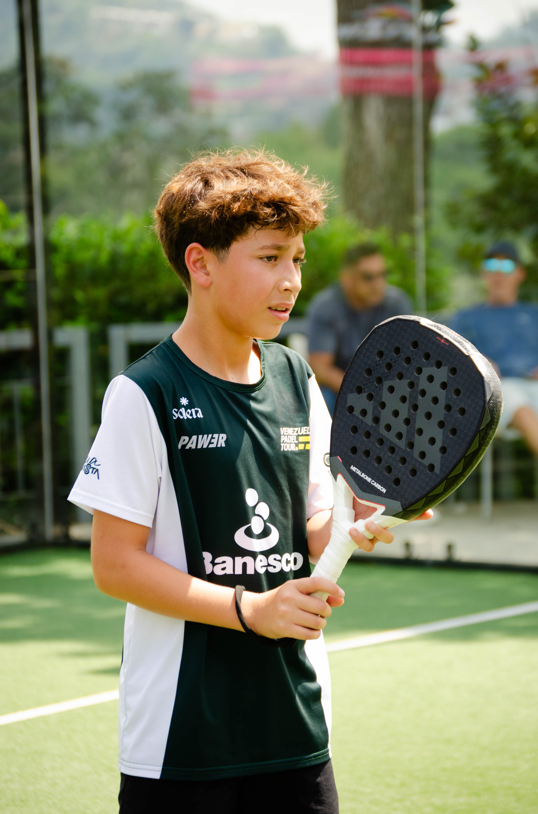

La Parada Junior
Bienvenido al hub de este proyecto. Aquí puedes describir de qué trató y cuál fue tu papel. Usando la grilla de abajo, la página está programada automáticamente para soportar tanto galerías de fotos como videos pesados.
← Back to Works


